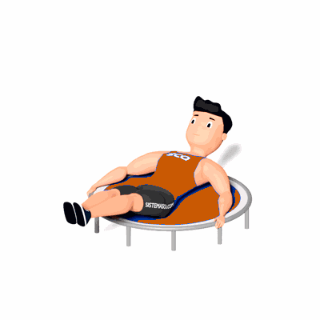

Abdominal com Flexão de Quadril no Jump

O exercício trabalha o fortalecimento e hipertrofia dos músculos do abdômen, com ênfase no Reto do Abdome.
Ficha Técnica
Tipo: Funcional
Grupo Muscular: Abdome
Aparelho: Nenhum
Músculos: Nenhum
Como realizar
- Sente-se no trampolim e apoie os braços nas laterais;
- Inicie o movimento com as pernas estendidas, levante as pernas e aproxime os joelhos do tronco ao mesmo tempo que também aproxima o tronco dos joelhos;
- Inverta o movimento descendo e estendendo as pernas ao mesmo tempo que move o tronco para trás. Repita durante o número desejado de repetições.
 RC STORE
RC STORE